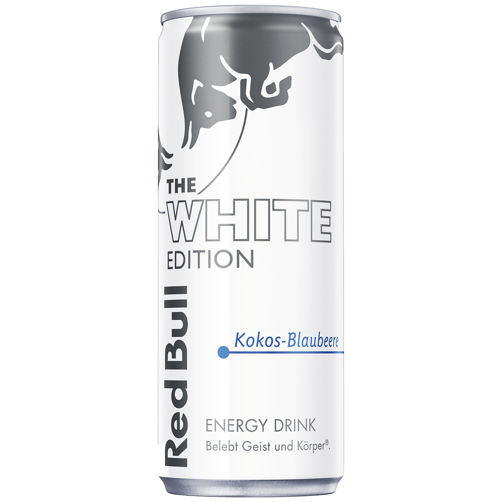
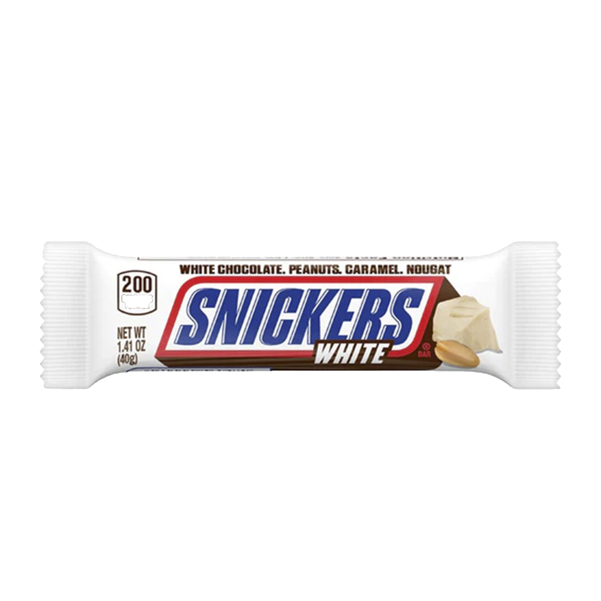

Oreo White sind köstliche, knusprige Kekse mit einer cremigen, weißen Füllung, die einen klassischen Geschmack mit einem Hauch von Vanille bietet. Diese beliebten Kekse sind ein Genuss für Naschkatzen und bieten eine verlockende Kombination aus zartem Gebäck und cremiger Füllung.HIER ZUM PRODUKT
Red Bull White ist eine Variante des beliebten Energy-Drinks Red Bull, mit einem einzigartigen Geschmacksprofil und einem weiß gestalteten Dosen-Design. Er zeichnet sich durch seinen erfrischenden Geschmack und seine belebenden Eigenschaften aus und bietet den Verbrauchern eine einzigartige Alternative innerhalb der Red Bull Produktreihe.HIER ZUM PRODUKT
"Snickers White" ist eine Variante des klassischen Schokoriegels "Snickers", der anstelle von Milchschokolade eine Schicht weißer Schokolade aufweist, wodurch ein süßeres und cremigeres Geschmackserlebnis entsteht. Es kombiniert weiterhin die bekannten Zutaten wie Karamell, Nougat und Erdnüsse für einen unverwechselbaren Genuss.HIER ZUM PRODUKT